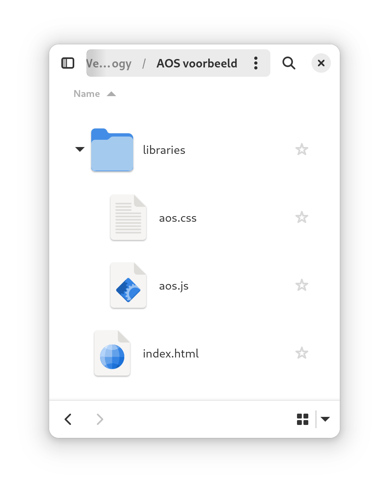

JavaScript- en CSS-libraries zijn verzamelingen van voorgeprogrammeerde functies en stijlen die kunnen worden gebruikt om de ontwikkeling van webpagina’s te versnellen en verbeteren.
Voorbeeld: AOS.js (library)
Animate on scroll (AOS.js) is een library die je toelaat elementen met een animatie in beeld te laten komen.
Oefening: voeg AOS.js toe aan je portfolio website
- Surf naar: https://michalsnik.github.io/aos/,
- Download en unzip de code.
- Plaats de bestanden in
aos-master/dist/
in de map van je website, in een folder genaamd
libraries/
. Dit is de code van de library.
 - Link in
index.html
naar de CSS en JS bestanden van de library.
Ondertussen zou je al moeten weten waar deze zijn code in je HTML-bestand moeten komen.<link rel="stylesheet" href="libraries/aos.css"> <script src="libraries/aos.js"></script> - Voeg deze code toe om de
AOS.jslibrary te starten. Dit moet onder de code staan dieaos.jsinlaad omdat de library eerst ingeladen moet zijn alvorens we de functies ervan kunnen gebruiken.<script> AOS.init(); </script> - Voeg de code voor het effect dat je wil toe aan een HTML-tag.
<h1 data-aos="fade-down">Header text</h1>
🏆
UITDAGING
Zoek uit hoe je animaties later kan starten en kan bepalen hoe lang ze duren.
Populaire libraries
Hieronder staan een aantal veelgebruikte libraries:
- Hover animaties
- Hover & loading animatie
- Reveal animaties
- Loading animatie
- Animate on scroll (AOS.JS)
- Hamburger menu’s
- Patterns
- Interactieve 3D content
Librarie vs framework
- Een library biedt een set tools en functies die je kan gebruiken om (meestal kleine) specifieke taken uit te voeren.
- Een framework bied een een omvattende structuur en werkwijze die je moet volgen, inclusief richtlijnen en conventies.
💡
INFO
Een library kan je best kiezen bij de start van grote projecten. Terwijl je een library later kan toevoegen wanneer je nood hebt aan specifieke functionaliteit.
Design systems (framework)
Een design system in is een verzameling van herbruikbare code en elementen die je kan gebruiken bij het maken van een project. Het bevat onder andere zaken als knoppen, navigatiebalken, icoontjes, kleuren, …
Door een design system te gebruiken kan je snel een websites maken met een mooi en bruikbaar ontwerpen zonder alles handmatig te moeten ontwerpen.
Hieronder een aantal veelgebruikte design systems:
Opdracht libraries
- Maak een website met een design system naar keuze, start met de homepage waarin staat welk design system je gekozen hebt en waarom.
- Maak een pagina met afbeeldingen en gebruik een lightbox library (ontdek zelf wat een lightbox is).
- Maak minstens 2 andere pagina’s die elk een library gebruiken.
Minstens 1 library moet je zelf zoeken en mag niet in de cursus staan. (AOS.js telt niet als library die in de cursus staat, het is de bedoeling dat je zelf leert uitzoeken hoe je libraries kan gebruiken.)
Op elke pagina vermeld je:- Welke library het is en wat ze doet.
- Hoe je deze library kan gebruiken, met code voorbeelden (een kleine tutorial).
🤯
TIP
Om code weer te geven op een HTML-pagina zonder dat deze wordt uitgevoerd, kan je de [Highlight.js](https://highlightjs.org/) library gebruiken.
| Puntenverdeling: Externe libraries | |
|---|---|
| Je gebruikt een design system | 3 |
| Je legt uit wel design system je gebruikt hebt en waarom | 1 |
| Je gebruikt een lightbox library | 3 |
| Je hebt een pagina met een library uit de cursus | 3 |
| Je legt uit hoe je deze library uit de cursus moet gebruiken | 1 |
| Je hebt een pagina met een library die je zelf gevonden hebt | 3 |
| Je legt uit hoe je deze zelf gevonden library moet gebruiken | 1 |
| Totaal | 15 |
Local files vs hosted files
Library files (.css, .js) kunnen lokaal worden gehost, waarbij de bestanden rechtstreeks in de folder van het project worden geplaatst, of extern worden gehost, waarbij de bestanden worden geladen vanaf een externe locatie.
<link rel="stylesheet" href="<script src="libraries/aos.js"></script>">
<script src="https://unpkg.com/aos@2.3.1/dist/aos.js"></script>
Hostel files
Gehoste bestanden staan op externe servers, meestal van derden zoals Content Delivery Networks (CDN’s).
Voordelen van hostel files:
- Snellere laadtijden: als het wordt gehost op een goed geoptimaliseerde server. Gehoste bestanden worden vaak geleverd via Content Delivery Networks (CDN’s), wat betekent dat ze mogelijk al in de cache van de gebruiker staan of worden geleverd vanuit een server die dichter bij de gebruiker staat.
- Geen onderhoud: Je hoeft geen lokale kopieën van de bestanden te onderhouden of te updaten. Wanneer er een nieuwe versie beschikbaar is, wordt deze automatisch via de CDN geleverd.
Local files
Lokale bestanden bevinden zich op je eigen server (of computer).
Voordelen van local files:
- Controle: Wanneer een bestand aangepast word op een externe server, kan het de werking van je website verstoren, zonder dat jij dat weet. Bij lokale bestand weet je dat het bestand niet aangepast zal worden en dus dat het zal blijven werken.
- Geen afhankelijkheid van derden: Je bent niet afhankelijk van de externe serviceprovider (zoals CDN) om de bestanden beschikbaar te houden. Als deze een storing hebben, kan dit van invloed zijn op de beschikbaarheid van je website.
- Privacy en beveiliging: Als je externe scripts of bibliotheken laadt, geef je controle uit handen over wat er op je website wordt geladen. Hoewel CDNs doorgaans betrouwbaar zijn, brengt het laden van externe bestanden altijd een zeker risico met zich mee.
NPM (Node package manager)
Npm is een package manager voor JavaScript.
Een package manager is een tool die wordt gebruikt voor het beheren van pakketten of verzamelingen van bestanden.
Npm maakt het gemakkelijk om JavaScript-libraries te installeren en up-to-date te houden.